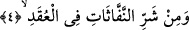
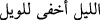
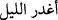
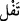
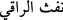

Onun için denilmiştir ki:  Gece, kötü şeyleri daha fazla gizler. Yine
denilmiştir ki:  (Gece gadretti) Çünkü gecede gadr (ihânet) çoğalır ve yardım
azalır. Onun için bir kimse geceleyin birine silâh çekse de kendisine silâh çekilen
çekeni öldürse kısâs gerekmez. Gündüz olsaydı gerekirdi, çünkü gündüz vakti
başkalarının yardım etmesi söz konusudur. Elhâsıl, ehl-i harb geceleyin hareket eder,
yine cin ifritleri, haşereler, insana zarar veren diğer mahlûkât hep gece ortaya çıkar.
Rasûlullah (s.a.) gecenin evvelinde yolculuk yapmayı yasaklamış, kapların ve
kapıların kapatılmasını, su kaplarının ağızlarının örtülmesini, çocukların sokağa
salıverilmeyip evde tutulmasını[267] emretmiştir. Bütün bunlar şer ve belâlardan
sakınmak içindir.
Denilmiştir ki, gasik aydır, vakab fiili ise ayın tutulup kararmasıdır. Hz. Âişe (r.anhâ)
şöyle demiştir: Rasûlullah (s.a.) elimi tuttu ve aya işâret ederek şöyle dedi: Bunun
şerrinden Allah’a sığın! Çünkü âyette bahsedilen gasik budur.[268] Kaçınılması
gereken şerler ise, ayın sebep olduğu bedenî sıkıntılar ile aya ve güneşe tapanların
düştüğü fitneler gibi dînî bazı problemlerdir. Denilmiştir ki: Ay için gasik kelimesinin
kullanılması ayın yüzeyinin karanlık olması ve ışığını güneşten alması ve ay sonunda
ışığın tamamıyla kaybolması sebebiyledir. Müneccimler bu durumu uğursuzluk kabul
ederler. Onun için de sihirbazlar hastalığa sebep olacak sihirlerini ancak bu zamanda
yaparlar. Bunun, sebeb-i nüzûle daha münasip olduğu söylenmiştir.
Bir görüşe göre ise gasile Süreyya yıldızıdır. Vakab fiilinden kasıd ise onun
sükûtudur/inişidir. O sükût ettiğinde hastalık ve tâunlar artar, o doğduğunda ise hastalık
ve elemler azalır.
Diğer bir görüşe göre ise gasik insana isâbet eden bütün şerlerdir. vakab fiilinden
kasıd ise onların insana hücûm etmesidir.
Gasik kelimesinden siyah yılan, vakab fiilinden ise onun vurması ve sokması kasd
olunabilir. Kâmûs’ta şöyle geçer: O uyanık hâliyle erkeğin uzvudur. Bu, İbn Abbâs ve
diğer bazı kimselerden nakledilmiştir.
4. Düğümlere üfürüp büyü yapan üfürükçülerin şerrinden,
“Üfleyenlerin, üfürükçülerin şerrinden”. “Neffâsât” kelimesi nefs kökünden gelir
ve nefh kelimesine benzer. Rukye yaparken tükürüksüz üflemeye verilen isimdir. Eğer
türkürüklü olursa ona  denilir. Sülâsî mücerred birinci ve ikinci bâblardan kullanılır.  demek, rukye yapan üfledi demektir. şeddeli hâli ile bu fiili çokça yapan
ve onu meslek hâline getirenler için kullanılır. ise fiili bir defâ yapan için
kullanılabildiği gibi çokça yapan için de kullanılabilir.